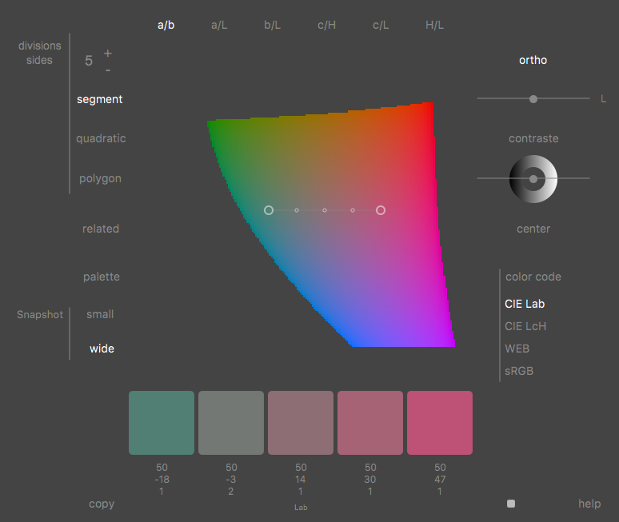
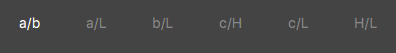
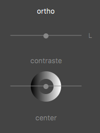
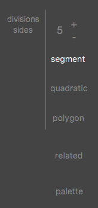
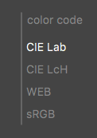
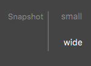
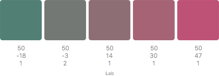
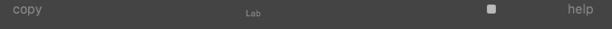
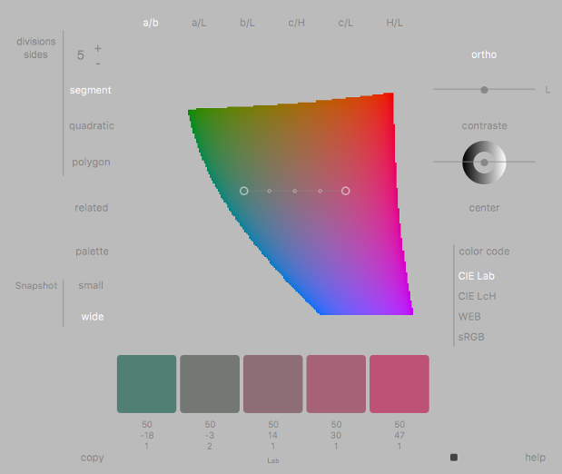

PerceptualColorPicker
Help Manual

PerceptualColorPicker is just a color picker like another one, except that
it uses perceptual colors planes instead of sRGB and HLS/HSV planes as
backgrounds. Before you use it, you should be familiar with perceptual
colors or not because you just have to look at them for appreciate
them. You should notice that the perceptual color system use in
PerceptualColorPicker is CIE Lab and its polar coordinates
transformation CIE LcH. Unlike other color picker, PerceptualColorPicker
use graphic tools to choose between 3 and 7 colors instead of only one.
Your are
maybe impatient to use it and, in the same time, curious about how it
works. Let's begin to explain it !
The planes menu

You may
have already notice that colors are generally describe with tree numbers
as they are tri-dimensionnal data. Unfortunately screen have only two
dimensions. So we can only have two coordinates displayed on screen. We
use a slider to go through the third one. Using CIE Lab and CIE Lch there
are six planes which are those listed by the planes menu.
The
first one is a/b which means that we have the "a" coordinate of CIE Lab
for the X-axis and "b" coordinate for the Y-axis. You could see it
on the general view of the interface above. You could also see the "L" at
the right of the "ortho" slider which means that the slider will go
through the "L" values (0-100) of the CIE Lab. It works the same way for
the five others planes : the first letter to X-axis, the second letter to
the Y-axis and the letter what is not in the menu is the variable that the
slider goes through.
The modes menu

There are two modes : ortho and contraste.
Their names are not self explanatory. To understand what they mean it's
necessary to remember that the goal of a color picker is to go through
the whole set of colors which is a volume. When we have a plane
there are different ways to go through the volume with it. In
PerceptiveColorPicker we use two ways :
- ortho : the first way is to go through
the volume keeping the plane parallel to the axes. As we said that the
fist coordinate was affected to the the X-axis and the second to the
Y-axis, we could say that the third coordinate is affected to the Z-axis
and is constant over the plane. Its constant value is given by the ortho
slider.
- contraste : another way for going trough
the colors volume is to use a gradient instead a constant for the third
coordinate. In this case the slider goes from 0° to 360° to change the
orientation of the gradient attempting that the vector gradient always
goes through the origin of the orthonormal. Don't beware if you don't
understand the way it works, just look at the colors to choose them.
That's what is really useful !!! The ring with the value gradient which
turns when the slider moves is a hint of what is happening with the
colors plane. When L is the variable you should find a relation of the
lowest color values of the plane and the dark side of the ring.
The tools menu

This
menu provide intuitive tools. The tools look at the color what are below
each circle they have. If a circle is out of the colors plane the tool see
the background color below the circle. Because of the colors planes
variations, the user must take care the tool he uses stays over them. The
+ and -, on the left, vary the number of divisions, from 3 to 7, for
segment and quadratic and the number of sides for polygon.
- segment : segment is useful for linear gradient in different planes.
If you are using them for neutral representation of data beware of the
chroma variations however. (chroma = c from Hcl).
- quadratic : a quadratic curve is a spline with only one control
point. It's a more dynamic tool that provide nice effects.
- polygon : in the a/b plane polygons give the most balanced theme. If
it stays centered on the plane origin you'll see that the chroma is
constant. The center button is available for polygons if you need to
center them again.
- related : two colors have two related colors because in a plane you
can construct two related points when you swap their coordinates.
These four colors have very strong relations. I love them !
- palette : palette is a more complex tool. You place the three vertex
of a triangle and it give the average color of each side and also of
the three vertex. If you keep the center in the translation ring you
get more balanced theme. Palette give seven colors but you can avoid
the fourth that is the center. The center button is available
for palettes if you need to center them again.
The color code menu

Changing the color code have two functions
:
- the more obvious is to permit to export color theme out of
PerceptualColorPicker. WEB and sRGB are for that use.
- another function is to control perceptual characteristics of color
theme by looking at the variations when using the sliders of the two
modes. For that you'll use CIE Lab and CIE LcH.
The snapshot menu

The small snapshot export the colors as a
png file :

The wide snapshot export the whole window.
That allows you to keep memory of how you got your theme and its
characteristics.
Other commands

Copy : copy to the clipboard the web colors
code.
Light gray square button : change the
background of the PerceptualColorPicker. It becomes a dark square button
to go back to dark background.
